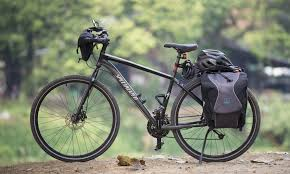

touring bicycles
A touring bicycle is a bicycle designed or modified to handle bicycle touring. To make the bikes sufficiently robust, comfortable and capable of carrying heavy loads, special features may include a long wheelbase (for ride comfort and to avoid pedal-to-luggage conflicts), frame materials that favor flexibility over rigidity (for ride comfort—though frame flexing can eventually lead to metal fatigue and frame failure, so newer frames are rigid), heavy duty wheels (for load capacity), and multiple mounting points (for luggage racks, fenders, and bottle cages).
here is an example of tourin bike
